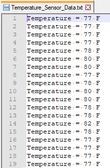

Getting
Started Application using Harmony v3 Drivers, System Services,
Middleware and FreeRTOS on Curiosity PIC32MZ EF 2.0 Development
Board
Description
The application reads the current room temperature from the
temperature sensor on the I/O1 Xplained Pro Extension Kit. The
temperature reading is displayed on a serial console periodically every
second. Further, the application writes the temperature readings to
EEPROM and to a file in a USB thumb drive whenever the USB thumb drive
is connected. Also, an LED LED1 is toggled every time the temperature is
displayed on the serial console and an LED (LED2) is in ON state when a
USB thumb drive is connected.
Modules/Technology Used:
- Peripheral Modules
- Drivers
- USB High-Speed Driver
- USART Synchronous Drive
- I²C Synchronous Driver
- System Services
- Middleware
- Third Party Libraries
Hardware Used:
This project has been verified to work with
the following versions of software tools:
Refer Project
Manifest present in harmony-manifest-success.yml under the project
folder firmware/src/config/pic32mz_ef_curiosity_v2
- Refer the Release Notes to
know the MPLAB X IDE and MCC Plugin
version. Alternatively, Click
Here.
- Any Serial Terminal application like Tera Term terminal
application.
Because Microchip regularly update tools,
occasionally issue(s) could be discovered while using the newer versions
of the tools. If the project doesn’t seem to work and version
incompatibility is suspected, It is recommended to double-check and use
the same versions that the project was tested with. To download
original version of MPLAB Harmony v3 packages, refer to document How
to Use the MPLAB Harmony v3 Project Manifest Feature
Setup:
- Connect the Curiosity PIC32MZ EF 2.0 Development Board to the Host
PC as a USB Device through a Type-A male to micro-B USB cable connected
to Micro-B USB (Debug USB) port
- Connect the I/O1 Xplained Pro Extension Kit (Temperature Sensor) to
J501 (Extension Header 1 (EXT1)) on the Curiosity PIC32MZ EF 2.0
Development Board
- Connect USB OTG Thumb Drive (Pendrive having mirco USB connector) or
connect any pen drive using Type-A female to micro-B USB converter cable
to Target USB (J201) on the Curiosity PIC32MZ EF 2.0 Development
Board

Programming hex file:
The pre-built hex file can be programmed by following the below
steps
Steps to program the hex
file
- Open MPLAB X IDE
- Close all existing projects in IDE, if any project is opened.
- Go to File -> Import -> Hex/ELF File
- In the “Import Image File” window, Step 1 - Create Prebuilt Project,
click the “Browse” button to select the prebuilt hex file.
- Select Device has “PIC32MZ2048EFM144”
- Ensure the proper tool is selected under “Hardware Tool”
- Click on “Next” button
- In the “Import Image File” window, Step 2 - Select Project Name and
Folder, select appropriate project name and folder
- Click on “Finish” button
- In MPLAB X IDE, click on “Make and Program Device” Button. The
device gets programmed in sometime.
- Follow the steps in “Running the Demo” section below
Programming/Debugging
Application Project:
- Open the project
(getting_started_middleware_drivers_freertos_pic32mz_ef_curiosity_v2.X)
in MPLAB X IDE
- Ensure “Curiosity/Starter Kits (PKOB4)” is selected as hardware tool
to program/debug the application
- Build the code and program the device by clicking on the “Make and
Program Device” button in MPLAB X IDE tool bar
- Follow the steps in “Running the Demo” section below
Running the Demo:
Open the Tera Term terminal application on your PC (from the
Windows® Start menu by pressing the Start button)
Change the baud rate to 115200
You should see the temperature values (in °F) being displayed on
the terminal every 500 milliseconds, as shown below

Also, notice the LED1 blinking at a one second rate
Press any character on the terminal to display the last five
values written to the EEPROM

You should see the LED2 is in “ON” state whenever you connect a
USB thumb drive and the application creates a text file
“Temperature_Sensor_Data.txt” if it is not already present in the USB
thumb drive. The latest room temperature samples are written to the text
file at a one-second rate. To view the data in the text file, connect
the USB Thumb drive to a PC USB port and open the
Temperature_Sensor_Data.txt file

You may vary the temperature by placing your finger on the
temperature sensor (for a few seconds)

Revision:
- v1.6.0 - Regenerated and tested the application
- v1.5.0 - Removed MHC support, regenerated and tested
application.
- v1.4.0 - Added MCC support, regenerated and tested application.
- v1.3.0 - Regenerated and tested application.
- v1.2.0 - Regenerated and tested application.
- v1.1.0 - Regenerated and tested application.
- v1.0.0 - Released demo application